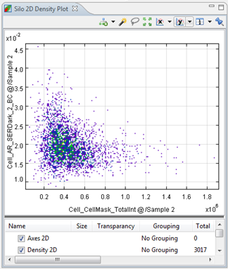

The 2D Density Plot shows the density of points by characteristics chosen on the x and y axes with the use of colors. The features chosen on the x and y axes need to be from the same silo group.
The Density Plot is only used when there are a sufficient amount of points. It is used to give a better visual about the density of cells according to chosen features. The density plot is not meant to select points.

| Scatter 2D Layer | This will add a Scatter Layer to the plot. This can be used to imitate the 2D scatter-density plot, or to clearly show selected points or regions. |
| Density 2D Layer | This will add another layer of the default Density Plot. |
| Contour 2D Layer | This will show gravity lines around areas according to the density. We recommend that you smoothen the lines with the layer settings for a better result. |